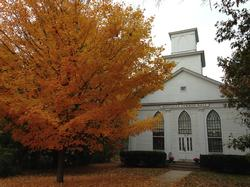
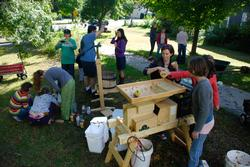
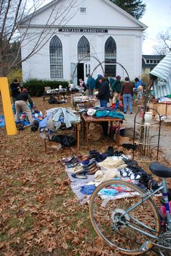
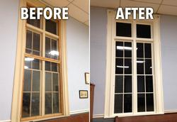

Happy Autumn!
Posted Thu, Sep 21, 2017; updated Mon, Sep 25, 2017

The Montague Common Hall has had a great Spring and Summer, with exciting rentals, public events, and on-going upgrades to the Hall.

THIS SATURDAY!9 September from 10am - noon
This is one of our favorite community events of the year!
Conor will bring his fabulous home-made press to the front lawn of the Common Hall, and show you how to use it.
Bring your fallen apples and containers to catch your fresh-pressed cider!
Yum!

* NEW DATE* 14 October - 8:30am - 2pmMCH Annual Gigantic Tag Sale
All proceeds will be split 50/50 between MCH and disaster relief for Irma and her gang of catastrophic cohorts.
To donate your fabulous treasures to these great causes, contact Mary at 367- 2184 to arrange a drop-off time.
Please NO electronics, NO underwear, NO other weird things you would be too embarrassed to sell at your own tag sale!
Tell all your friends, share on facebook, instagram, whatevz – come and spend big $$$ and get awesome stuff for cheap, while supporting not only your local community center, but also communities that have been walloped by recent natural disasters. Here's our event page on FB if you want to go Like us like crazy: LikeLikeLikeShareShare
14 October, 7pm
Open Mic Night #17
Come to hear amazing poet Paul Mariani, who anchors an evening starring YOU: singers, song-writers, jugglers, tap dancers, stand-up comics and more! You know who you are. All are welcome.
ON-GOING EVENTS - check calendar here
Tuesdays and some Thursdays at 5:30pm - Yoga with Nadya
Monthly Gender-Role Free Contra Dance
Monthly Open Mic Nights

GIGANTIC THANKSto Elaine Cuthbert, former long-time Grange member, who made a huge and beautifully timed donation to the Montague Common Hall. Because of her generous donation, we are able to have our old windows not replaced, but restored to their former glory, just when they were about to drop out of their frames.
Thank you so much, Elaine!
(And here's our contractor Chris Foley's contact info, if you are looking for meticulous restoration and painting: (six one seven) 596-9056)
Donate:
If you want to be awesome like Elaine (and honestly, who doesn’t?), and help us move toward larger fundraising goals that would help with major upgrades and restoration work, please send checks to:
Friends of the Montague Common Hall
PO Box 223
Montague, MA 01351
Become a Sustaining Member
If you don’t have a pajillion bucks to drop on the MCH, this is the next best thing – AND IT MAKES A HUGE DIFFERENCE. Our sustaining memberships are how we know we can pay our utilities from month to month. Because we are committed to keeping our rental fees low so that more of the community can use the Hall, our rental income barely pays the bills.
If you love the Hall as much as we do, please consider a sustaining membership of $10 a month – or more! That’s 2 fancy cups of coffee, or 3 gallons of gas, or a modest bottle of wine you could probably do without!
NEW this year with your Sustaining Membership: After your first 6 months of being a sustaining member you get one free rental of the Hall of up to 4 hours, per year. For more details contact us at info@MontagueCommonHall.org or if you are ready to sign up, go here.
Volunteer
Please join our tiny, passionate band of volunteers who paint, clean, restock, and organize events and classes. Seriously, WE NEED YOU. Many hands not only make light work, but also energize, nourish, and renew our commitment to keeping this community resource alive.
Finally, PITCH US!
If you have a great idea for a public event – a film, speaker, concert, class – let us know. We love to host events that benefit the larger community.
Hope to see you soon at the Montague Common Hall!